Ironvein Excavation
Stages 1–10 · review candidates · NOT merged or installed in Game
Focused text-driven PixelLab modules, native LibreSprite cleanup, then separate tiled Unity sprites. The original composition mockup was not uploaded to PixelLab. Characters, gems, cells, shared controls, bottom HUD art and measured layout are retained.
Existing Ironvein · actual Game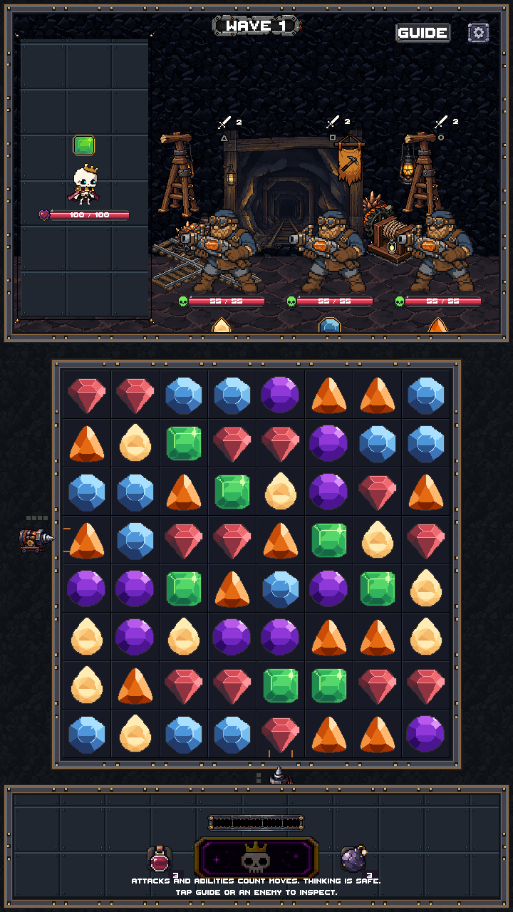
Proposed · actual Unity art-only scene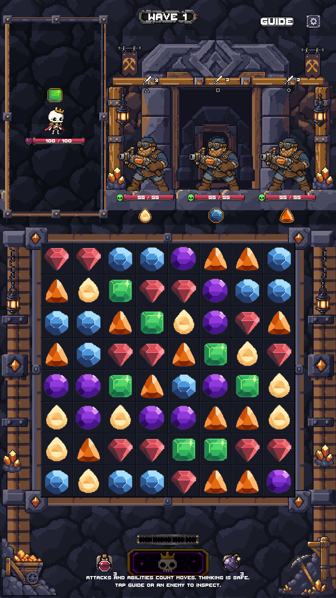
Composition target · concept image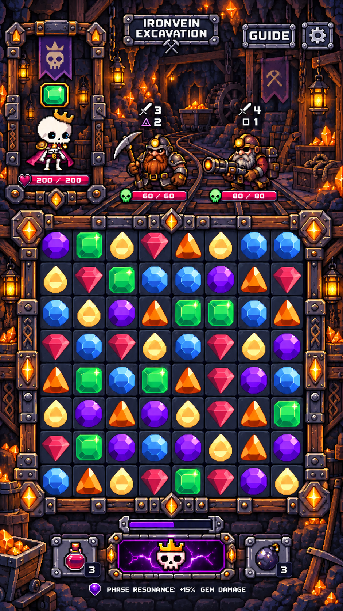
The revised scene is excluded from build settings. These are Unity camera renders with read-only copies of live production graphics, not playable integration or real-device tests. The existing fractional board scale is preserved; new environment pixels use uniform 1×/2×/3× sampling.
Verified scope
40 native modules · 14 PixelLab requests · 76 generations spent · 459.2 remaining. Native exports use binary transparency and 1–15 opaque colors per piece. New corners and tiled rails use the existing shared frame fitter. All original production art and bindings are retained.
Cleaned native assets — 1× by default
Raw PixelLab sources — unchanged originals
CavernWall
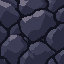
Raw PixelLab · 5 generations
MinePortal
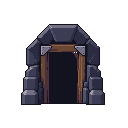
Raw PixelLab · 6 generations
TimberPost
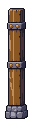
Raw PixelLab · 6 generations
GreatPortal
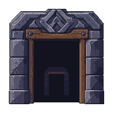
Raw PixelLab · 6 generations
MineLantern
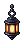
Raw PixelLab · 5 generations
RailPlatform
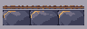
Raw PixelLab · 5 generations
AmberOre
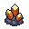
Raw PixelLab · 5 generations
PortraitFrameSource
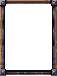
Raw PixelLab · 6 generations
BoardFrameSource
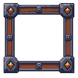
Raw PixelLab · 6 generations
SideSupport
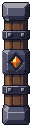
Raw PixelLab · 6 generations
LowerCartLeft
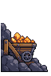
Raw PixelLab · 5 generations
LowerToolsRight
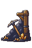
Raw PixelLab · 5 generations
MiningBanner
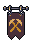
Raw PixelLab · 5 generations
DistantTracks
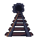
Raw PixelLab · 5 generations
What still needs approval
All new Ironvein environment artwork, material colors and assembled visual treatment need your visual approval. Production Game integration and main merge have not been performed. No actor redesign, new gameplay, UI layout change or global renderer change is included.